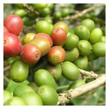

Mientras que algunos productores de café de Colombia luchan por mantenerse a flote, dos cooperativas de cultivo de café han introducido un modelo de negocio para comercializar su café tostado directamente a los compradores y mejorar sus ingresos.

La tendencia de los productores de convertir el tostado no es ninguna novedadç en países como Perú, Etiopía, Guatemala y México. Pero esto es nuevo para Colombia, el tercer mayor exportador mundial de café y productor de granos de arábica de alta calidad.